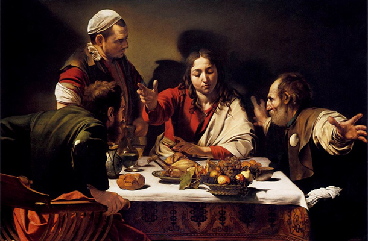
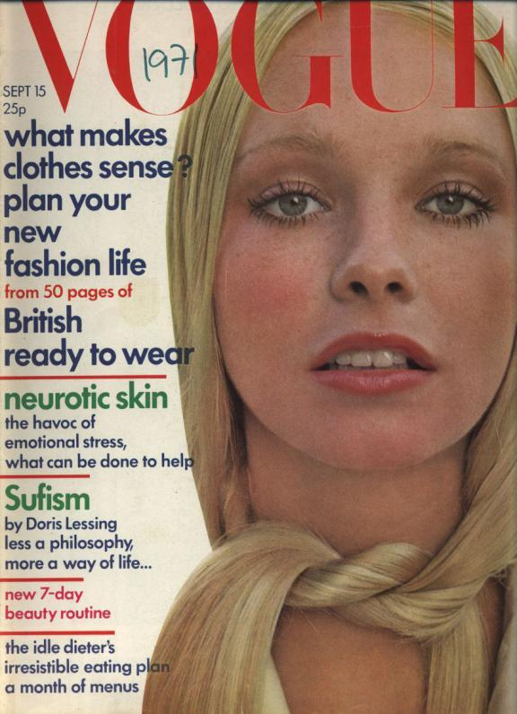

Episode 1
In this episode, Berger explores the idea of how our indivdual experiences shape the way we view a work of art. For example, he asked a group of school children to examine a Caravaggio painting depicting Jesus. Most of the female children interpreted the central figure as being a women. Without the context of the masculine versus feminine beuty standards of the time, and without the religious background, the image was left to their own interpretation. One child even said that it looked like a group of friends at lunch debating whether or not to eat stolen food.
What we take away from a piece of art comes from our wordly experiences, and may not be what the artist intended. Our interpretation can be shaped by many factors such as what is happening in the news, the political or religious climate of the time, or even the music we are listening to as we view the image.
Episode 2
Berger explores the idea of the nude in art verusus its cultural and social inmplications in this episode.

Berger describes the idea of the nude in art is to be naked for the sake of viewing; being stripped of one's humanity and identity. Thus contrasting the idea of being naked, where one maintains their persona. While the subject is not necissarily meant to be provocative, it often has that relationship with the viewer. The subject bears a knowing gaze. This has made the nude a symbol of female vanity. The irony stems from the fact that it was painted by a male artist for his own pleasure. It repeats the historical trend of blaming women for their own beauty and sexualtiy despite the fact that it is men who express judgment over these things. Women have been taught to view their own bodies as how they would be percived by men. When Berger interviewed a group of women, asking them about their perception of nudes, they stated that they felt no connection to the paintings. The works felt like an abstraction or idealization that did not represnt what they see in the mirror. They also stated that the nudes lacks information. It doesn't contain a story, rather is a still image which exists only to be looked at and not to invoke any thought.
Episode 3

Berger discusses how oil paint is used to create representations of real objects. Thus in buying an oil painting, you also have some form of ownership over the onject being represented. This creates a sense of unobtainable wealth. They celebrated that which couldn't actually be obtained, and portrayed a level of unimaginable extravence. Images depicting things such as livestock were used to highlight the owners pedigree and power handed down through generations. Even portraits, which didn't contain grand lavish objects, were displays of extreme wealth, because the painting itself was somethign that could only be commisioned by the upper class.
Episode 4
The tradition of image has been used to create the idea of the unobtainable. From the days of oil painting which depicted the glamourous life styles of the upper class, to modern times with photgraphs placed all around us. Advertisements play on our anxieties of the things we want but cannot have. Additionally, they are so crudly placed. Berger examines a magazine which on one page is advertising Pimms, an alcoholic beverage, and the very next page is an exposé talking about Pakistani refugees. These photos all beong to part of the same culture, edited onto the pages of the same magazine. They represent the disconect in our soicety that is created by the abunance of images.
